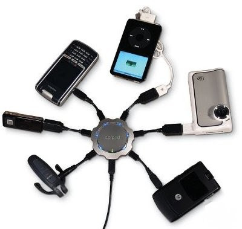
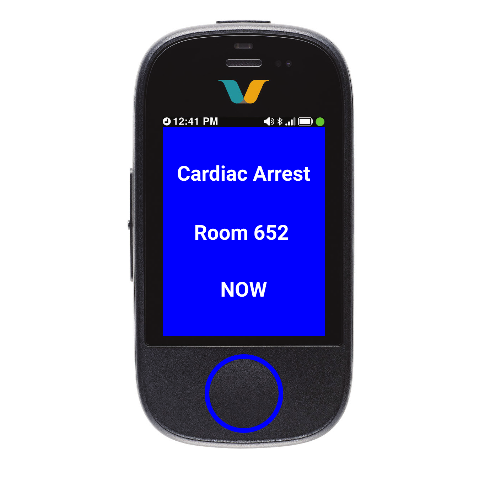
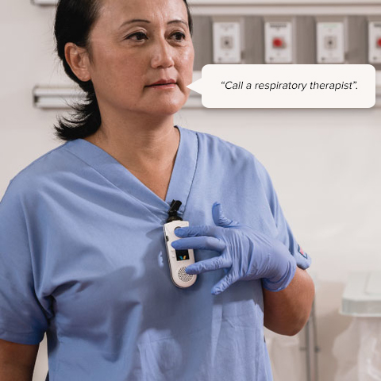
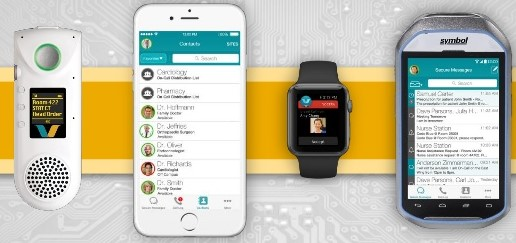
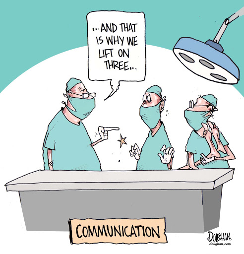

The Current Landscape
“Lots of people show up to codes. Lots of doctors are there, lots of nurses are there. So we have the manpower, it’s just about organizing people to go to the right place.”
- Dr. Siobhan Deshauer (Violin MD), Internal Medical Resident, YouTuber
Communication failures are the top reason for adverse events to happen
-
Loosely Formed Teams
Patient care teams are dynamically and quickly assembled in emergency and trauma situations. There is a dearth of tools that support the formation of care teams. Prior research has identified a need for tools that can provide lightweight feedback as scaffolding. 1.
-
Overhead paging is disruptive
These systems can suffer from poor messaging quality in addition to causing undirected disruption for many people. These issues combined can make response mechanisms reliant on this system less efficient and mistake-prone.
-

Have to carry multiple devices
In a typical hospital environment, a healthcare provider carries a pager, a smartphone, and a supplementary device (e.g. Vocera) to be able to communicate “efficiently”. These many devices can lead to inefficiencies, add to the complexity and increase cognitive load.
Our Commitment
“that's kind of a lot ... of devices to wear and to hold and I would rather see streamlining ... rather than add an additional device”
- Dr Preetham Suresh, Clinical Professor, Anaesthesiology, UCSD Health
J.A.R.V.I.S. is born out of a human-centered research process that focuses on breaking the trend of introducing new devices into health facilities. Our team at HC4H is committed to building communication solutions for healthcare providers. Solutions that reduce fatigue and cognitive load, while supporting efficient communication. Our commitment and process promote products that harmoniously integrate into your healthcare facilities.
Our Solution
J.A.R.V.I.S. (Just A Rather Very Integrated Scheduler) is a tool that can be deployed on top of existing communication infrastructure in a hospital. It utilizes role-based paging on smartphones, pagers, or dedicated devices like Vocera. It combines with lightweight group feedback. Resulting in the promotion of efficient response mechanisms in emergency and trauma scenarios.

Features
-

Simple Interface
The most vital pieces of information are shared in a standardized manner. 2 This ensures rapid response times in emergency situations and high interoperability across facilities.
-

Non Disruptive
Overhead paging systems can be disruptive and can add to the alarm fatigue faced by healthcare professionals. J.A.R.V.I.S. delivers role based personalised messages such that only the relevant people get disrupted.
-

Multi Modal
Users are given the option to use J.A.R.V.I.S. on a device of their choice with either touch or voice based input. Enabled by voice assistant technology in combination with our custom NLP Engine.
Workflow
Future Work
-

Indoor Localization
Our team is conducting research on using bluetooth beacons to locate people in the hospital. In combination with a heuristics based algorithm we want to add the ability to smartly ping only people nearby a room where help is needed.
-

Tackle more communication problems
There are many more challenges with communication in healthcare facilities that need tackling. With rigorous fieldwork our team aims to take them on. As a first we want to focus on using our feedback based system to organise communication in non emergency situations.
-
One Device
All our work culminates in the moonshot vision of having a single device as a go to for all healthcare professionals. While pagers have survived from the previous era, newer devices have been added and there is a severe need for consolidation.